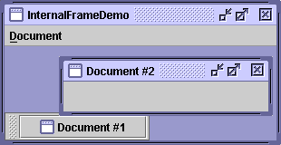

Feedback Form
|
|
Start of Tutorial > Start of Trail > Start of Lesson |
Search
Feedback Form |
With theJInternalFrameclass you can display a
JFrame-like window within another window. Usually, you add internal frames to a desktop pane. The desktop pane, in turn, might be used as the content pane of aJFrame. The desktop pane is an instance ofJDesktopPaneJLayeredPanethat has added API for managing multiple overlapping internal frames.You should consider carefully whether to base your program's GUI around frames or internal frames. Switching from internal frames to frames or vice versa isn't necessarily a simple task. By experimenting with both frames and internal frames, you can get an idea of the tradeoffs involved in choosing one over the other.
Here is a picture of an application that has two internal frames (one of which is iconified) inside a regular frame:

Try this:
- Run InternalFrameDemo using JavaTM Web Start
. Or, to compile and run the example yourself, consult the example index.
- Create new internal frames using the Create item in the Document menu.
Each internal frame comes up 30 pixels lower and to the right of the place where the previous internal frame first appeared. This functionality is implemented in theMyInternalFrameclass, which is the custom subclass ofJInternalFrame.The following code, taken from
InternalFrameDemo.java, creates the desktop and internal frames in the previous example.
...//In the constructor of InternalFrameDemo, a JFrame subclass: desktop = new JDesktopPane(); createFrame(); //Create first window setContentPane(desktop); ... //Make dragging a little faster but perhaps uglier. desktop.setDragMode(JDesktopPane.OUTLINE_DRAG_MODE); ... protected void createFrame() { MyInternalFrame frame = new MyInternalFrame(); frame.setVisible(true); //necessary as of 1.3 desktop.add(frame); try { frame.setSelected(true); } catch (java.beans.PropertyVetoException e) {} } ...//In the constructor of MyInternalFrame, a JInternalFrame subclass: static int openFrameCount = 0; static final int xOffset = 30, yOffset = 30; public MyInternalFrame() { super("Document #" + (++openFrameCount), true, //resizable true, //closable true, //maximizable true);//iconifiable //...Create the GUI and put it in the window... //...Then set the window size or call pack... ... //Set the window's location. setLocation(xOffset*openFrameCount, yOffset*openFrameCount); }
The code for using internal frames is similar in many ways to the code for using regular Swing frames. Because internal frames have root panes, setting up the GUI for aJInternalFrameis very similar to setting up the GUI for aJFrame.JInternalFramealso provides other API, such aspack, that makes it similar toJFrame.
Note: Just as for a regular frame, you must invokesetVisible(true)orshow()on an internal frame to display it. In early versions of the Java 2 platform (such as v1.2.2), this code has no effect because the internal frame is visible by default. However, starting in the 1.3 release, the internal frame does not appear until you explicitly make it visible.Internal frames aren't windows or top-level containers, however, which makes them different from frames. For example, you must add an internal frame to a container (usually a
JDesktopPane); an internal frame can't be the root of a containment hierarchy. Also, internal frames don't generate window events. Instead, the user actions that would cause a frame to fire window events cause an internal frame to fire internal frame events.Because internal frames are implemented with platform-independent code, they add some features that frames can't give you. One such feature is that internal frames give you more control over their state and capabilities than frames do. You can programatically iconify or maximize an internal frame. You can also specify what icon goes in the internal frame's title bar. You can even specify whether the internal frame has the window decorations to support resizing, iconifying, closing, and maximizing.
Another feature is that internal frames are designed to work within desktop panes. The
JInternalFrameAPI contains methods such asmoveToFrontthat work only if the internal frame's container is a layered pane such as aJDesktopPane.
If you've built any programs usingJFrameand the other Swing components, then you already know a lot about how to use internal frames. The following list summarizes the rules for using internal frames. For additional information, see How to Make Frames and The JComponent Class.
- You must set the size of the internal frame.
- If you don't set the size of the internal frame, it will have zero size and thus never be visible. You can set the size using one of the following methods:
setSize,pack, orsetBounds.- As a rule, you should set the location of the internal frame.
- If you don't set the location of the internal frame, it will come up at 0,0 (the upper left of its container). You can use the
setLocationorsetBoundsmethod to specify the upper left point of the internal frame, relative to its container.- To add components to an internal frame, you add them to the internal frame's content pane.
- This is exactly like the
JFramesituation. See Adding Components to the Content Pane for details.- Dialogs that are internal frames should be implemented using
JOptionPaneorJInternalFrame, notJDialog.- To create a simple dialog, you can use the
JOptionPaneshowInternalXxxDialogmethods, as described in How to Make Dialogs.- You must add an internal frame to a container.
- If you don't add the internal frame to a container (usually a
JDesktopPane), the internal frame won't appear.- You need to call
showorsetVisibleon internal frames.- Beginning with the 1.3 release, internal frames are invisible by default. You must invoke
setVisible(true)orshow()to make them visible.- Internal frames fire internal frame events, not window events.
- Handling internal frame events is almost identical to handling window events. See How to Write an Internal Frame Listener for more information.
When a desktop has many internal frames, the user might notice that moving them seems slow. Outline dragging is one way to avoid this problem. With outline dragging, only the outline of the internal frame is painted at the current mouse position while the internal frame's being dragged. The internal frame's innards are not repainted at a new position until dragging stops. The default behavior (called live dragging) is to reposition and repaint some or all of internal frame continuously while it's being moved; this can be slow if the desktop has many internal frames.
Performance tip:Use the
JDesktopPanemethodsetDragMode* to specify outline dragging. For example:desktop.setDragMode(JDesktopPane.OUTLINE_DRAG_MODE);[* PENDING: This gray text will become a footnote, like most other pre-1.4 info.]
The
setDragModemethod was added in 1.3. In J2SE v 1.2.2, you can specify outline dragging by setting a client property of the desktop pane, like this:desktop.putClientProperty("JDesktopPane.dragMode", "outline");
The following tables list the commonly usedJInternalFrameconstructors and methods, as well as a few methods thatJDesktopPaneprovides. Besides the API listed in this section,JInternalFrameinherits useful API from its superclasses,JComponent,Component, andContainer. See The JComponent Class for lists of methods from those classes.Like
JInternalFrame,JDesktopPanedescends fromJComponent, and thus provides the methods described in The JComponent Class. BecauseJDesktopPaneextendsJLayeredPane, it also supports the methods described in The Layered Pane API.The API for using internal frames falls into these categories:
- Creating the internal frame
- Adding components to the internal frame
- Specifying the internal frame's visibility, size, and location
- Performing window operations on the internal frame
- Controlling window decorations and capabilities
- Using the JDesktopPane API
Adding Components to the Internal Frame Method Purpose void setContentPane(Container)
Container getContentPane()Set or get the internal frame's content pane, which generally contains all of the internal frame's GUI, with the exception of the menu bar and window decorations. void setJMenuBar(JMenuBar)
JMenuBar getJMenuBar()Set or get the internal frame's menu bar. void setLayeredPane(JLayeredPane)
JLayeredPane getLayeredPane()Set or get the internal frame's layered pane.
Specifying the Internal Frame's Visibility, Size, and Location Method Purpose void setVisible(boolean)Make the internal frame visible (if true) or invisible (iffalse). You should invokesetVisible(true)on eachJInternalFramebefore adding it to its container. (Inherited fromComponent).void pack()Size the internal frame so that its components are at their preferred sizes. void setLocation(Point)
void setLocation(int, int)Set the position of the internal frame. (Inherited from Component).void setBounds(Rectangle)
void setBounds(int, int, int, int)Explicitly set the size and location of the internal frame. (Inherited from Component).void setSize(Dimension)
void setSize(int, int)Explicitly set the size of the internal frame. (Inherited from Component).
Performing Window Operations on the Internal Frame Method Purpose void setDefaultCloseOperation(int)
int getDefaultCloseOperation()Set or get what the internal frame does when the user attempts to "close" the internal frame. The default value (as of 1.3) is DISPOSE_ON_CLOSE. Other possible values areDO_NOTHING_ON_CLOSEandHIDE_ON_CLOSE(which was the default value before 1.3). See Responding to Window-Closing Events for details.void addInternalFrameListener(InternalFrameListener)
void removeInternalFrameListener(InternalFrameListener)Add or remove an internal frame listener ( JInternalFrame's equivalent of a window listener). See How to Write an Internal Frame Listener for more information.void moveToFront()
void moveToBack()If the internal frame's parent is a layered pane such as a desktop pane, moves the internal frame to the front or back (respectively) of its layer. void setClosed(boolean)
boolean isClosed()Set or get whether the internal frame is currently closed. The argument to setClosedmust betrue. When reopening a closed internal frame, you make it visible and add it to a container (usually the desktop pane you originally added it to).void setIcon(boolean)
boolean isIcon()Iconify or deiconify the internal frame, or determine whether it's currently iconified. void setMaximum(boolean)
boolean isMaximum()Maximize or restore the internal frame, or determine whether it's maximized. void setSelected(boolean)
boolean isSelected()Set or get whether the internal frame is the currently "selected" (activated) internal frame.
Controlling Window Decorations and Capabilities Method Purpose void setFrameIcon(Icon)
Icon getFrameIcon()Set or get the icon displayed in the title bar of the internal frame (usually in the top-left corner). void setClosable(boolean)
boolean isClosable()Set or get whether the user can close the internal frame. void setIconifiable(boolean)
boolean isIconifiable()Set or get whether the internal frame can be iconified. void setMaximizable(boolean)
boolean isMaximizable()Set or get whether the user can maximize this internal frame. void setResizable(boolean)
boolean isResizable()Set or get whether the internal frame can be resized. void setTitle(String)
String getTitle()Set or get the window title.
Using the JDesktopPaneAPIConstructor or Method Purpose JDesktopPane()Creates a new instance of JDesktopPane.JInternalFrame[] getAllFrames()Returns all JInternalFrameobjects that the desktop contains.JInternalFrame[] getAllFramesInLayer(int)Returns all JInternalFrameobjects that the desktop contains that are in the specified layer. See How to Use Layered Panes for information about layers.void setDragMode(int)
int getDragMode()Set or get the drag mode used for internal frames in this desktop. The integer can be either JDesktopPane.LIVE_DRAG_MODEorJDesktopPane.OUTLINE_DRAG_MODE. The default for the Java look and feel is live-drag mode. This API was introduced in 1.3.
The following examples use internal frames. Because internal frames are similar to regular frames, you should also look at Examples that Use Frames.
Example Where Described Notes MyInternalFrameThis page. Implements an internal frame that appears at an offset to the previously created internal frame. InternalFrameDemoThis page. Lets you create internal frames (instances of MyInternalFrame) that go into the application'sJDesktopPane.InternalFrameEventDemoHow to Write an Internal Frame Listener Demonstrates listening for internal frame events. Also demonstrates positioning internal frames within a desktop pane.
|
|
Start of Tutorial > Start of Trail > Start of Lesson |
Search
Feedback Form |
Copyright 1995-2004 Sun Microsystems, Inc. All rights reserved.